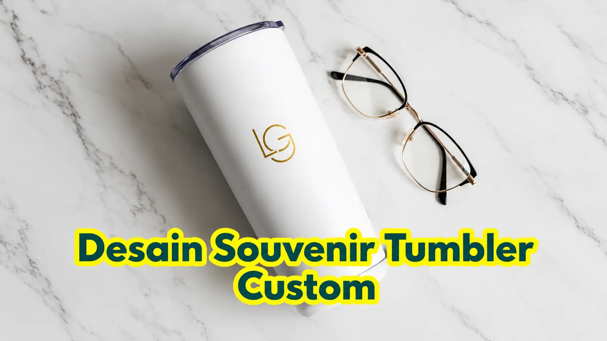

Corporate Gifts ID - Desain souvenir tumbler custom yang elegan dan profesional dapat diciptakan dengan memadukan logo perusahaan, tipografi modern, pola geometris abstrak, hingga ilustrasi ikonik pada permukaan tumbler berbahan stainless steel food-grade SUS 304. Artikel ini merangkum lebih dari 10 inspirasi desain tumbler custom promosi yang siap diadaptasi untuk memperkuat identitas merek korporat Anda.
Poin Kunci Desain Souvenir Tumbler Custom:
- Bukan Sekadar Botol: Menjadi media branding bergerak (mobile brand billboard) yang dipakai harian di kantor, gym, maupun perjalanan bisnis.
- Gaya Fleksibel: Mulai dari minimalis monokrom laser grafir hingga full-wrap UV print 360 derajat berwarna cerah.
- Personalisasi Nama: Meningkatkan nilai emosional dan mencegah tertukar di area kerja bersama.
- Standar Vektor: Penggunaan file master berbasis vektor menjamin ketajaman detail logo pada lengkungan botol.
Sebuah tumbler custom lebih dari sekadar wadah minuman; ia adalah representasi kualitas citra perusahaan Anda di mata publik. Desain yang tepat mampu mengubah botol minum biasa menjadi cinderamata berkelas yang membanggakan penerimanya, sementara desain yang terlalu padat dapat membuatnya jarang digunakan. Kuncinya terletak pada keselarasan estetika dan identitas brand.
10 Inspirasi Desain Tumbler yang Siap Diadaptasi
Berikut adalah sepuluh konsep visual terbaik yang dapat diterapkan pada koleksi souvenir kantor Anda:
1. Desain Minimalis: Logo Bersih (Clean Emblem)
Kesederhanaan selalu memancarkan keanggunan abadi. Tempatkan logo korporat secara presisi di bagian tengah atas tumbler. Gaya ini paling optimal diaplikasikan menggunakan teknik laser engraving (grafir) pada bodi tumbler berbahan matte atau doff hitam, menghasilkan kilau perak metalik yang sangat eksklusif.
2. Logo Disertai Tagline Perusahaan
Sematkan satu baris moto atau slogan korporat di bawah simbol logo utama. Elemen ini mempertegas pesan merek dan memberikan konteks misi bisnis setiap kali tumbler digunakan dalam pertemuan kerja.
3. Desain Tipografi Artistik (Typography Art)
Jadikan susunan huruf sebagai fokus estetika utama. Kutipan inspiratif seputar inovasi, etos kerja, atau pesan keberlanjutan lingkungan yang dirancang dengan jenis huruf kontemporer akan memberikan daya tarik visual tinggi bagi generasi muda.

4. Pola Geometris atau Abstrak (Full-Wrap Pattern)
Bagi perusahaan di bidang teknologi, industri kreatif, dan arsitektur, penerapan pola geometris 360 derajat menggunakan teknik cetak UV rotary akan menciptakan kesan modern, futuristik, dan sangat dinamis.
5. Ilustrasi Ikonik Khas Perusahaan
Gunakan maskot brand, ikon arsitektur kantor pusat, atau elemen grafis produk unggulan sebagai elemen ilustratif pada salah satu sisi tumbler untuk membangun ikatan emosional yang erat dengan konsumen.
6. Desain Bertema Acara Khusus (Event-Specific Design)
Hadirkan memorabilia khusus dengan menyertakan nama kegiatan seperti "Annual National Conference" atau perayaan "25th Anniversary". Model ini sangat cocok dipadukan ke dalam paket seminar kit eksklusif.
7. Personalisasi Nama Individual
Ukiran nama masing-masing peserta atau klien VIP di bawah logo perusahaan memberikan impresi hadiah yang sangat personal, eksklusif, serta mencegah insiden tertukar saat berada di ruang rapat bersama.
8. Desain Futuristik untuk Smart Tumbler
Aksen garis neon digital, ilustrasi sirkuit mikro, atau ikon suhu minimalis sangat selaras dengan bodi Smart Tumbler yang telah dilengkapi sensor tutup LED pemantau temperatur cairan secara real-time.
9. Desain Peta atau Koordinat Geografis
Konsep titik koordinat bujur dan lintang kantor pusat atau sketsa peta kepulauan nusantara sangat diminati oleh institusi pemerintahan, kementerian, BUMN, serta korporasi sektor maritim dan logistik.
10. Desain Mewah "Tone-on-Tone" (Glossy on Matte)
Ciptakan tampilan subtle dan premium dengan mencetak logo glossy hitam di atas permukaan tumbler bertekstur matte black. Hasil akhirnya menampilkan bayangan logo yang sangat elegan tanpa terkesan mencolok.
Tabel Perbandingan Gaya Desain & Teknik Kustomisasi
Tabel berikut membantu Anda memilih teknik kustomisasi yang paling selaras dengan konsep desain dan target audiens acara:
| Gaya Desain | Teknik Kustomisasi | Karakteristik Visual | Rekomendasi Penggunaan |
|---|---|---|---|
| Minimalis (Logo Clean) | Laser Engraving (Grafir) | Monokromatik silver metalik, tahan gores permanen | Klien VIP, Eksekutif, Rapat Direksi |
| Logo + Tagline | Sablon Industri / UV Spot | Warna brand solid dan kontras tinggi | Onboarding Karyawan, Internal Gathering |
| Tipografi Artistik | Pad Printing / UV Flatbed | Detail garis huruf tajam dan artistik | Komunitas Kreatif, Seminar Edukasi |
| Full-Wrap Geometris | UV Rotary 360 Full-Body | Visual warna-warni melingkar tanpa batas garis | Tech Startup, Brand FMCG, Kaum Muda |
| Personalisasi Nama | Laser Engraving Presisi | Sentuhan individual yang sangat personal | Apresiasi Karyawan Teladan, Kado Wisuda |
Tips Pro untuk Desain Tumbler yang Maksimal
Agar hasil produksi suvenir tumbler sesuai ekspektasi dan memiliki daya tahan jangka panjang, terapkan pedoman teknis berikut:
- Pilih Kontras Warna yang Tepat: Pastikan warna logo tidak tenggelam pada bodi botol. Gunakan logo putih/perak pada bodi gelap, dan logo gelap pada bodi cerah.
- Perhatikan Lengkungan Permukaan (Curvature): Hindari menaruh teks berukuran terlalu panjang dalam satu baris mendatar karena akan melengkung saat dilihat dari sudut depan.
- Sediakan File Master Vektor: Kirimkan file desain dalam format
.AI,.EPS, atau.PDFkurva resolusi tinggi agar garis cetak tidak pecah. - Konsultasikan Ukuran Area Cetak: Setiap jenis botol memiliki batas margin cetak yang aman agar logo tidak terpotong dekat leher atau dasar botol.
Kesimpulan: Wujudkan Ide Desain Anda
Perencanaan desain yang matang akan melipatgandakan fungsi suvenir tumbler dari sekadar cinderamata formalitas menjadi sarana promosi jangka panjang yang efektif.
Sudah memiliki konsep atau ingin berdiskusi dengan tim kreatif kami? Jelajahi katalog resmi Corporate Gifts ID dan dapatkan layanan pembuatan sampel mockup digital gratis untuk kebutuhan pengadaan suvenir tumbler perusahaan Anda sekarang juga!